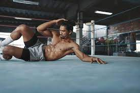

A strong core is essential for overall strength, stability, and good posture. If you're looking to develop sculpted abs and improve your core strength, this article provides an effective abs workout routine that targets all areas of your midsection. Whether you're a beginner or experienced, these exercises will help you achieve a strong and defined core.
The plank is a foundational exercise that engages your entire core, including your abdominal muscles, obliques, and lower back. Start by assuming a push-up position with your forearms on the ground, elbows aligned beneath your shoulders, and feet together. Hold this position while maintaining a straight line from head to heels. Aim for 30-60 seconds and gradually increase the duration as you get stronger.
Bicycle crunches are an effective exercise for targeting both your upper and lower abs. Lie flat on your back, bring your knees up to a 90-degree angle, and place your hands behind your head. Alternately bring your left elbow towards your right knee while extending your left leg straight, and then switch sides. Perform 15-20 repetitions on each side.
Russian twists work your oblique muscles and help develop core stability. Sit on the ground with your knees bent, lean slightly back, and lift your feet off the ground. Hold your hands together in front of your chest and twist your torso from side to side, touching the ground on each side. Perform 15-20 repetitions on each side.
Mountain climbers are a dynamic exercise that engages your abs, shoulders, and legs. Start in a high plank position with your hands aligned beneath your shoulders. Bring one knee towards your chest and quickly switch legs, simulating a running motion. Perform this exercise at a moderate pace for 30-60 seconds.
Leg raises target your lower abs and help strengthen your hip flexors. Lie flat on your back with your legs extended. Keeping your legs straight, lift them off the ground until they are perpendicular to the floor. Slowly lower them back down without touching the ground and repeat for 12-15 repetitions.
Plank hip dips activate your obliques and promote core stability. Start in a side plank position with your elbow on the ground, and your body forming a straight line. Lower your hips towards the ground, and then raise them back up. Perform 10-12 repetitions on each side.
A strong core is crucial for overall strength and stability. Incorporating these effective abs exercises into your workout routine will help you develop a sculpted midsection and enhance your core strength. Remember to perform each exercise with proper form, gradually increase the intensity, and stay consistent to achieve the best results.